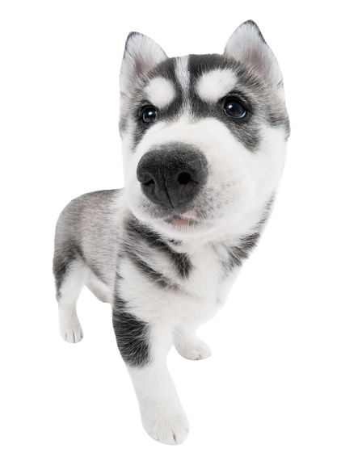
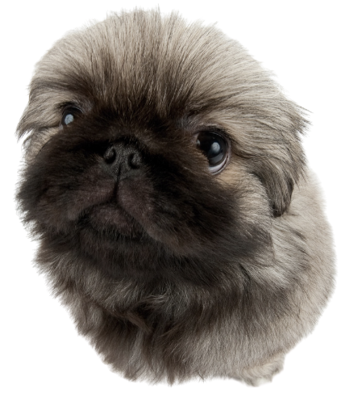
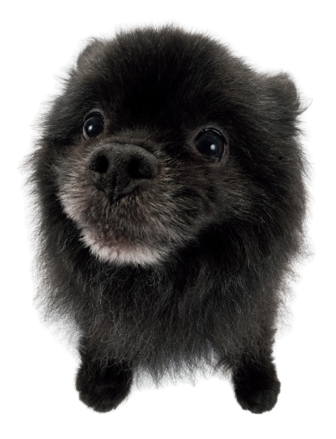

*Boop* a dog's nose
to reveal a fact!

Greyhounds can beat cheetahs in a race. While cheetahs can run twice as fast as greyhounds, they can only maintain that 70 mph speed for about thirty seconds. A greyhound can maintain a 35 mph speed for about seven miles. The cheetah may start out first, but the greyhound would soon overtake them.

Dachshunds (weiner dogs) were originally bred to fight badgers.
Dogs are as smart as a 2-year old human.

The largest known litter of puppies was born to a mastiff named Tia. She had 24 puppies in one litter!

A dog's nose print is unique, much like a person's fingerprint.
All photo creds belong
to © The Dog Company

The Norwegian Lundehund is the only dog breed created for the job of puffin hunting.
A bloodhound's sense of smell is so accurate that the results of its tracking can be used as evidence in a court of law.

According to Guinness World Records, a Great Dane named Zeus is the world’s tallest male dog. Zeus is 3 feet, 5.18 inches tall.

Chow chows and shar-peis have black tongues.
Dogs are not color-blind. They can see blue and yellow.

Petting a dog can actually benefit your physical and mental health. Studies have shown that petting a dog for 15 minutes can lower blood pressure by 10%, can help lower feelings of stress, depression, and combat loneliness.